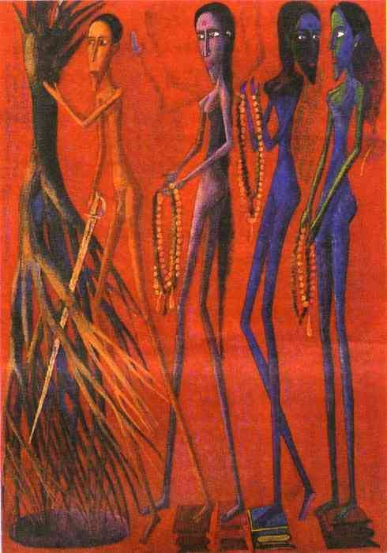

July-August 1999 BIBLIO
COVER PAINTING: 'Mankind - 2194 - The last submission to aggression'
by Ved Nayar
, 1994, Gouache on paper, from the book
Indian Contemporary Art Post Independence
, published by Vadhera Art Gallery, New Delhi.
